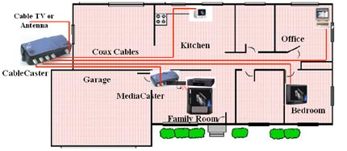

De juiste keuzen voor nu en in de toekomst
Welke componenten, welke verbindingen, routering, switching, protocollen, beveiliging, storage, beheer, quality of service (QoS), schaalbaarheid en redundantie, private of publieke cloud,
fysieke en virtuele netwerken, SDN, fysieke en virtuele appliances, open source, vertrouwde en opkomende leveranciers - de netwerk engineer / architect / consultant inventariseert uw
huidige en toekomstige behoeften en integreert alles in een degelijk advies en ontwerp.

Uw nieuwe plannen, uitbreidingen, surveys of herinrichting zijn bij ons in goede handen. Wij doen het ontwerp voor u of fungeren als klankbord dan wel second opinion.
Dark & managed fiber / glasvezel, FTTx en belichting, CWDM, DWDM, IPv4/IPv6 routering (ook dynamisch: BGP, OSPF), (ethernet) switching, MPLS, VLAN, VPN, firewalling,
SSL VPN en tele/thuiswerken, datacenter, centralisatie, virtualisatie, Internet transit, hoge beschikbaarheids platformen, load balancing, redundantie, fail-over,
clustering, storage, VoIP, ... zit u met vragen of onzekerheden als het gaat om Internet & server platformen, internetworking, netwerken, netwerktelefonie, datacenters: aarzel niet
en neem geheel vrijblijvend contact met ons op.
klik hier voor onze algemen voorwaarden.
KVK Groningen 55504698